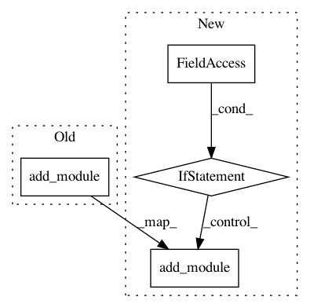

a00144f746bb2ba4da5b1ddaf4954d6f5320c953,rllib/agents/ddpg/ddpg_torch_model.py,DDPGTorchModel,__init__,#DDPGTorchModel#Any#Any#Any#Any#Any#Any#Any#Any#Any#Any#Any#,22
Before Change
torch.from_numpy(low_action)
return actions
self.policy_model.add_module("action_out_squashed", _Lambda())
// Build the Q-net(s), including target Q-net(s).
def build_q_net(name_):
activation = get_activation_fn(
After Change
return squashed
// Only squash if we have bounded actions.
if self.bounded:
self.policy_model.add_module("action_out_squashed", _Lambda())
// Build the Q-net(s), including target Q-net(s).
def build_q_net(name_):
activation = get_activation_fn(
critic_hidden_activation, framework="torch")
// For continuous actions: Feed obs and actions (concatenated)
In pattern: SUPERPATTERN
Frequency: 3
Non-data size: 4
Instances
Project Name: ray-project/ray
Commit Name: a00144f746bb2ba4da5b1ddaf4954d6f5320c953
Time: 2020-05-04
Author: sven@anyscale.io
File Name: rllib/agents/ddpg/ddpg_torch_model.py
Class Name: DDPGTorchModel
Method Name: __init__
Project Name: ray-project/ray
Commit Name: 5dc4b6686e5885df7d53c6162773ece336994feb
Time: 2020-07-25
Author: sven@anyscale.io
File Name: rllib/agents/dqn/dqn_torch_model.py
Class Name: DQNTorchModel
Method Name: __init__
Project Name: ray-project/ray
Commit Name: 14160ca58c8d37ea4c08639be12c6569a80eb190
Time: 2020-07-10
Author: sven@anyscale.io
File Name: rllib/agents/dqn/dqn_torch_model.py
Class Name: DQNTorchModel
Method Name: __init__